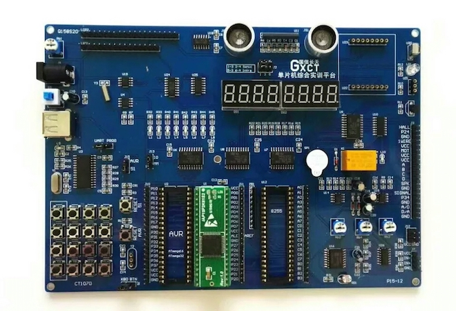

这是我参加 2018 届蓝桥杯所学习的资料。虽然比赛结果不尽如人意，但是学习 51 单片机的过程是值得回忆的，也是有所收获的。
一、准备工作
1、硬件
CT107D实验平台、IAP15F2K61S2转接芯片

2、软件
- Keil uVision4 含注册机
- stc-isp-15xx-v6.86I.exe
3、蓝桥官网资料：lanqiao.org
蓝桥杯全国软件和信息技术专业人才大赛辅导资料 「http://dasai.lanqiao.cn/pages/dasai/news_detail.html?id=644」
4、学习资料
- 51教程论坛
- CT107D单片机实训平台实验历程
- 常用芯片资料
- 驱动及其下载软件stc-isp-15xx-v6.86I.exe
- CT107D电路原理图
- CT107D使用说明书
- IAP15F2K61S2-89C52转换板说明文件
- IAP15F2K61S2 单片机仿真使用说明
- STC15F2K60S2 单片机用户手册
- 转接板PCB
- 转接板电路原理图
5、历年真题
6、学习网站
7、浏览器推荐
网盘资源
- 软件安装
- 学习资料
- 历年真题
二、基础模块学习
0、74138
1、LED
2、蜂鸣器&继电器
3、定时器 0/1
4、数码管
5、独立键盘
6、矩阵键盘
7、实时时钟模块
8、EEPROM-AT24C02 存储芯片
9、DS18B20 温度传感器
10、PCF8591 光敏电阻
网盘资源
- 各模块中文数据手册
- 模块参考程序
- 官方提供的模块驱动程序
三、调试通过的完整真题程序
学习他人优秀的编码风格，模块化编程、变量命名等。
四、随便说说
我失败的原因：
-
应试能力、随机应变能力差
-
忽视基础的重要性
-
平时训练的方法有误
-
总体写代码水平有待提高